Servicios del Instituto Tecnológico Superior de Perote
El instituo tecnológico superior de Perote ha venido creciendo conforme a la creciente demanda del Municipio de Perote y de sus alrededores. En 2010 con el apoyo del Patronato del ITSPe, empleados y empresarios de la región se construyó un edificio de 4 aulas, permitiendo con ello tener posibilidades de incrementar la matrícula escolar.
En 2011, derivado de los convenios con el sector productivo y gubernamental, se logró que CFE donara seis aulas pre-fabricadas que en su momento se utilizaron como biblioteca y aulas para clases.
Al día de hoy, los Espacios Físicos que los estudiantes tienen a su disposición incluyen 31 aulas, Laboratorios (química e investigación), talleres (Industrial, Alimentarias, Electromecánica, Energías Renovables, Informática) y tres Centros de Cómputo, Biblioteca, Cafetería, dos Canchas de Básquetbol (una de ellas techada), dos Plazas Cívicas y dos andadores.

A continuación se describen los servicios con sus respectivos usos dentro de la institución, cada servicio está destinado al funcionamiento satisfactorio de las necesidades de la institución educativa.
Servidor DHCP
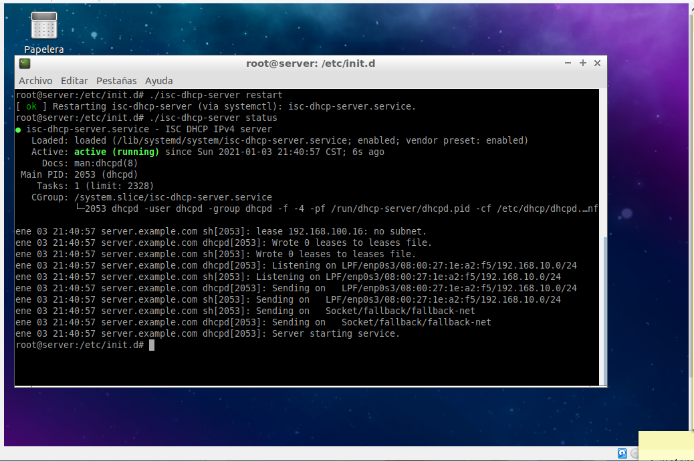El servidor DHCP estará alojado en un servidor Ubuntu que se ubicara en el edificio B especificamente en el centro de cómputo B1 donde asignará direcciones clase C a los dispositivos del mismo edificio B, el edificio C, el edificio I y el edificio A ayudando al manejo interno de la información permitiendo un uso correcto y controlado de esta.
Un segundo servidor Ubuntu con el servidor DHCP de igual forma estará en el edificio B específicamente ahora en el centro de cómputo B2 donde asignará direcciones clase C a los dispositivos del edificio D, el edificio E, el edificio F, el edificio G y el edificio H.
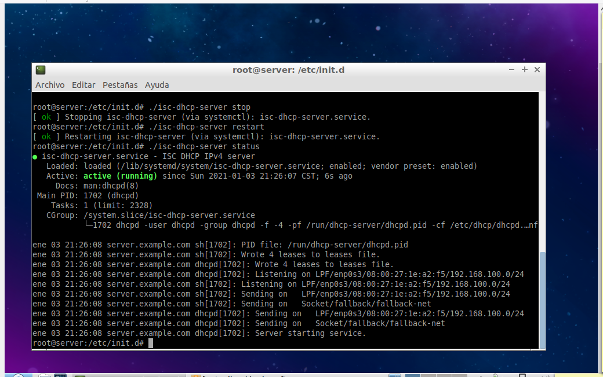>Se usa servidor linux para una mejor seguridad, las vulnerabilidades se solucionan rapidamente además de no es fácil el acceso de usuarios habituales a los ajustes básicos, el acceso remoto es flexible, así mismo el coste es gratuito excepto los de asistencia.
Servidor FTP
El servidor vsftp (FTP) se alojará en ambos servidores Ubuntu, se encuentra configurado para que usuarios puedan entrar con un procedimiento de inicio de sesión donde solo podrán descargar archivos que sean legibles para todos los usuarios, esto con el fin de que dispositivos del otro centro de cómputo así como el edificio A (dirección), edificio B (departamento de control escolar) y el edificio I (departamento de desarrollo académico) tenga acceso a archivos subidos al igual que puedan subirlos.
Es un servidor seguro, rápido y muy estable, las opciones de configuración por parte del usuarios son muy avanzadas, es compatible con ipv6 además que tiene soporte cifrado a través de integración con SSL, vsftp es uno de los mejores servidores de FTP por lo cuál para la institución educativa al estar disponible para linux se muestra muy adecuado.
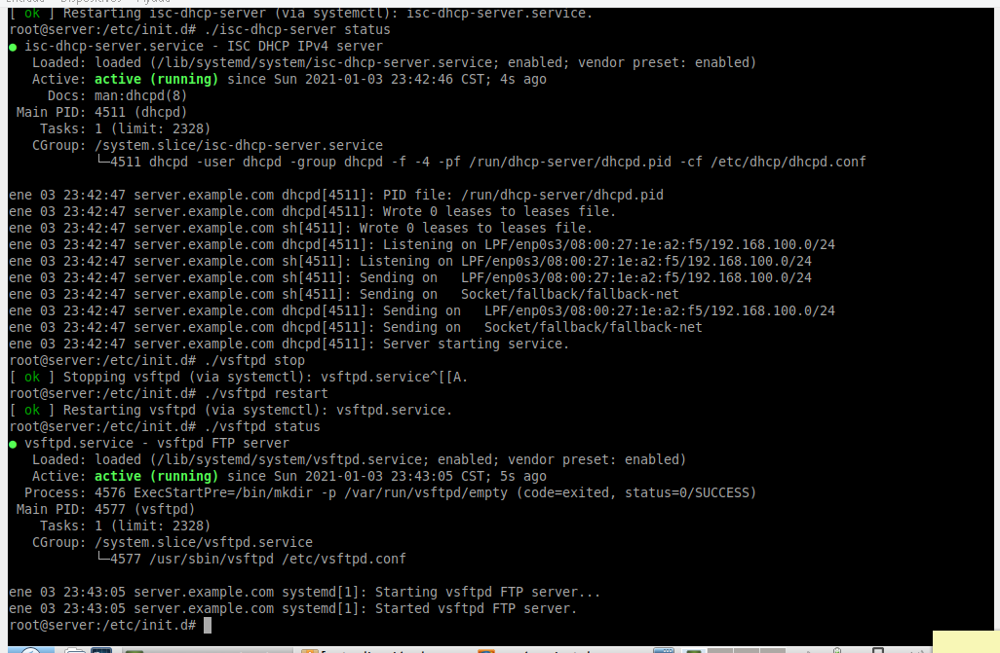 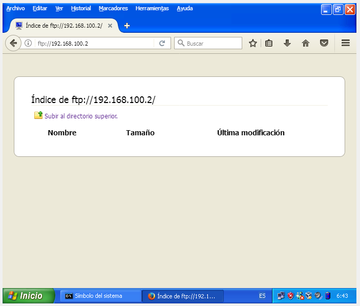Servidor FTP alojado en servidor ubuntu 1 del centro de cómputo B1 del edificio B
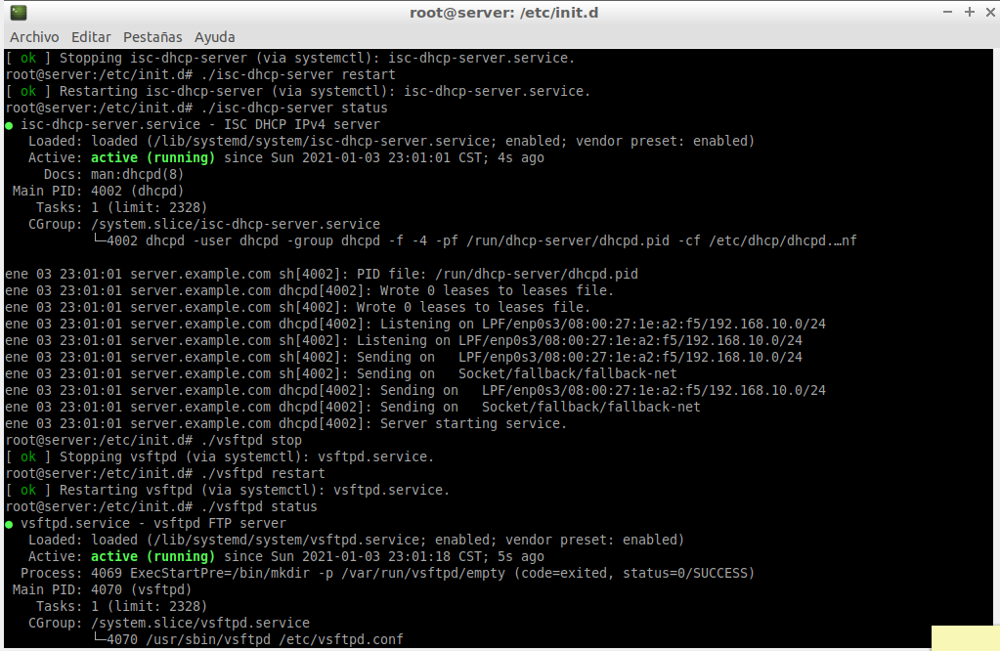 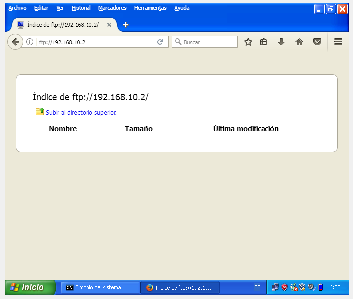Servidor FTP alojado en servidor ubuntu 2 del centro de cómputo B2 del edificio B
Servidor Web
El servidor apache2 (servidor web/http) alojado en ambos servidores Ubuntu pueden alojar sistemas web que la institución haya desarrollado para facilitar procesos y satisfacer necesidades. Últimamente todas las instituciones cuentan con su propio sitio web que permite facilitar procesos además de convertirse en una medida de publicidad.
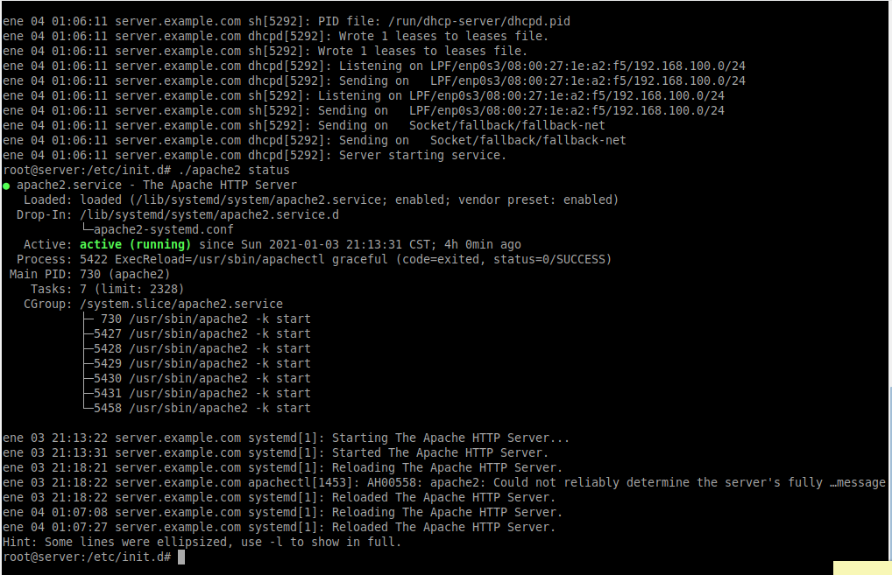Por lo cuál estos dos servidores web contendrán el sitio web personal del instituto, así también puede ser escalable. Al igual que ambos contendrán otro sitio web que es una biblioteca virtual, también el sistema de préstamos estará alojado en ambos por cuestiones de redundancia a fallos. La escabilidad se encuentra presente con apache puesto puede manejar uno o dos sitios web pero también miles de ellos y es cómodo tanto para contenido dinámico como estático. Tiene una comunidad de soporte grande, activa y entusiasta, además cuenta con gran documentación sobre su uso y se actualiza frecuentemente.
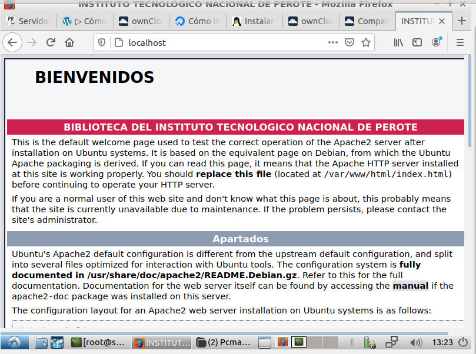 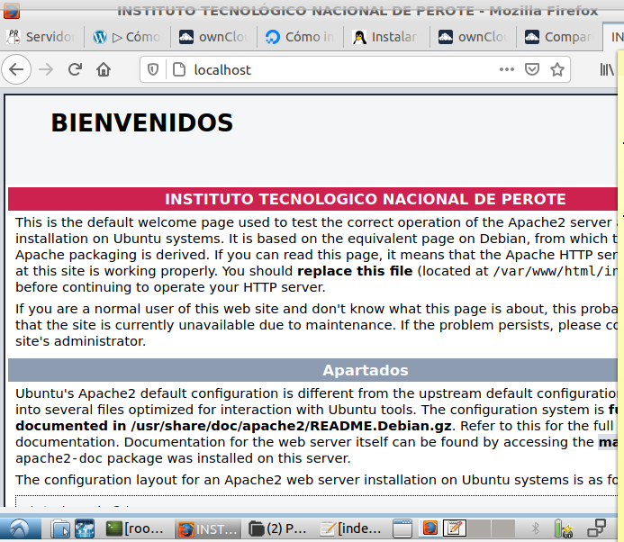 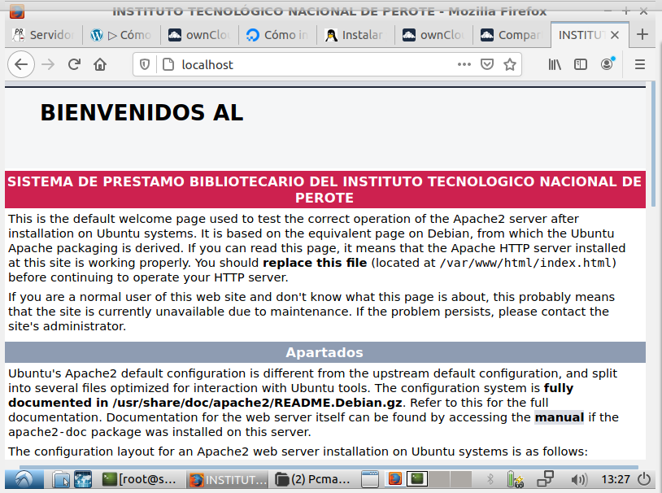Ejemplos de sitios web que pueden estar en el servidor web:
Servidor proxy SQUID
El servidor proxy Squid alojado en ambos servidores son configurados para que no puedan acceder a páginas cualquier usuario que busque con palabras sexuales, pornografía, agresiones físicas, violaciones, etc. Además de negar el acceso a páginas que consuman un ancho de banda en la red, como por ejemplo cualquier plataforma de contenidos audiovisuales a través de plataformas en línea, reproductoras de música vía streaming, entre otras.
El servidor Squid permite usar el servidor como servidor cache, para despachar de forma más rápida contenidos como por ejemplo el sitio web de la nstitución, así logrando cargar sitios web realmente rápidos, además permite guardar en sus archivos de datos sobre el tráfico que maneja, para ver que hacen con la conexión a la red. La filtración de sitios es muy importante en los servidores proxys, para bloquear los sitios antes mencionados o maliciosos que contegan malware o virus.
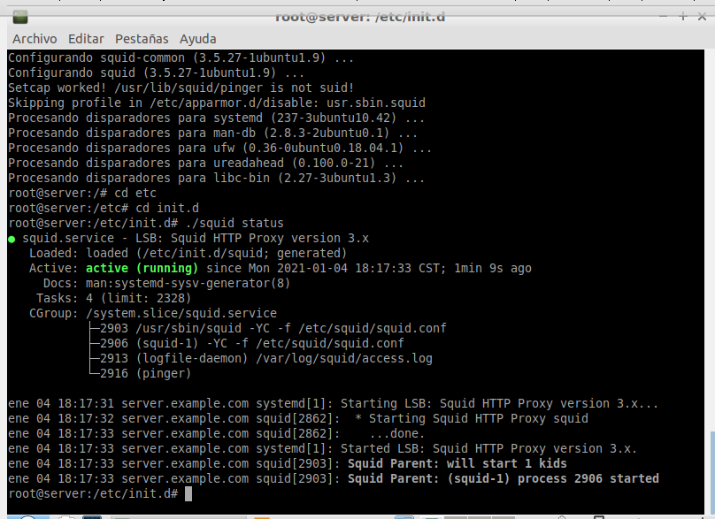Squid permite bloquear direcciones IP internas o externas con bloqueos temporales o completos, así podemos bloquear IP de dispositivos que puedan acceder a las páginas restringidas. La autenticación pues este mecanismo de seguridad mediante un usuario y contraseña en la mayoría de los casos. Limitar el ancho de banda imponiendo limites a la cantidad de conexiones y ancho de banda que asigna a cada una de ellas, así evitar lentitud en la red, podemos limitar conexiones en la cafetería, en la papelería, en los laboratorios y talleres para prioridad de mejor ancho de banda en salones, centros de cómputo, direcciones y el departamento de control escolar.
Servidor Nube
El servicio de owncloud será alojado en ambos servidores Ubuntu donde el primer servidor ubicado en el dificio B especialmente en el B1 los usuarios del edifio A donde se encuentran las subdirecciones, servicios, direcciones, divisiones y departamentos, también del edificio I en específico de depto. de desarrollo académico, la oficina de orientación educativa y psicología.
El segundo servidor ubicado en el edificio B en el centro de cómputo B2, proveera de servicios de nube a el edificio B especialmente a la oficina de sindicato, salas de docentes de posdgrados y sala de docentes.
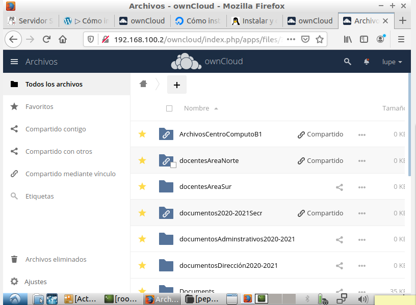Pues owncloud provee que se pueda diseñar su propio sistema de almacenamiento en la nube, asumiendo el control de datos y las elecciones de privacidad. Ayudará en las diferentes áreas de la institución a compartir una carpeta o archivos de usuario, además de proveer de privilegios para ciertos usuarios, esto es una ventaja en el primer servidor dónde se dará privilegios para poder modificar archivos en la nube pues el edificio A y B de acuerdo a las áreas especificadas anteriormente. El otro servidor proveer privilegios a usuarios de la sala de posdgrados, para poder modificar los archivos.
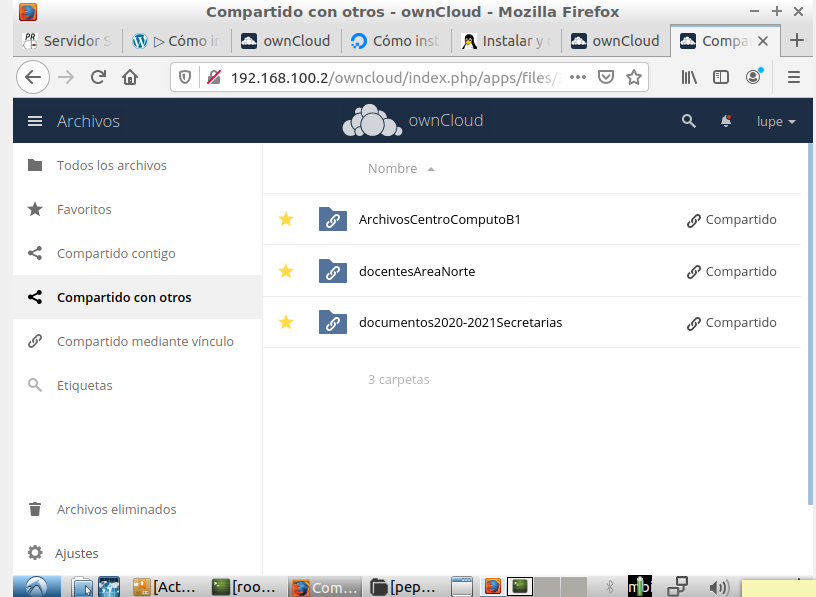Las carpetas compartidas en la nube permiten a los usuarios tener restricciones, por ejemplo las carpetas que se observan tienen distintis permisos, la primera tiene permisos de lectura, vista y modificación ayudando a que el centro de cómputo facilite alguna actualización o configuración de alguna aplicación o sistema. La segunda y tercera solo tienen permiso de vista y lectura pues son usadas para enviar comunicados, avisos, documentos, infografías, etc. a docentes y secretarias.
Servidor DNS
EL servidor bin9 (servidor dns) alojado en ambos servidores Ubuntu permite a cada área que le toca a cada servidor Ubuntu tener un control de por ejemplo transformar las direcciones de los servicios volver sus direcciones ip en nombres de dominios que con la ayuda del servidor puedan acceder a estos servicios Al igual se usara para que los host en una red que se conectan a través de sus nombres de máquinas (FQDN), bind9 ayudará a asociar los nombres de las máquinas a las direcciones IP para el host.
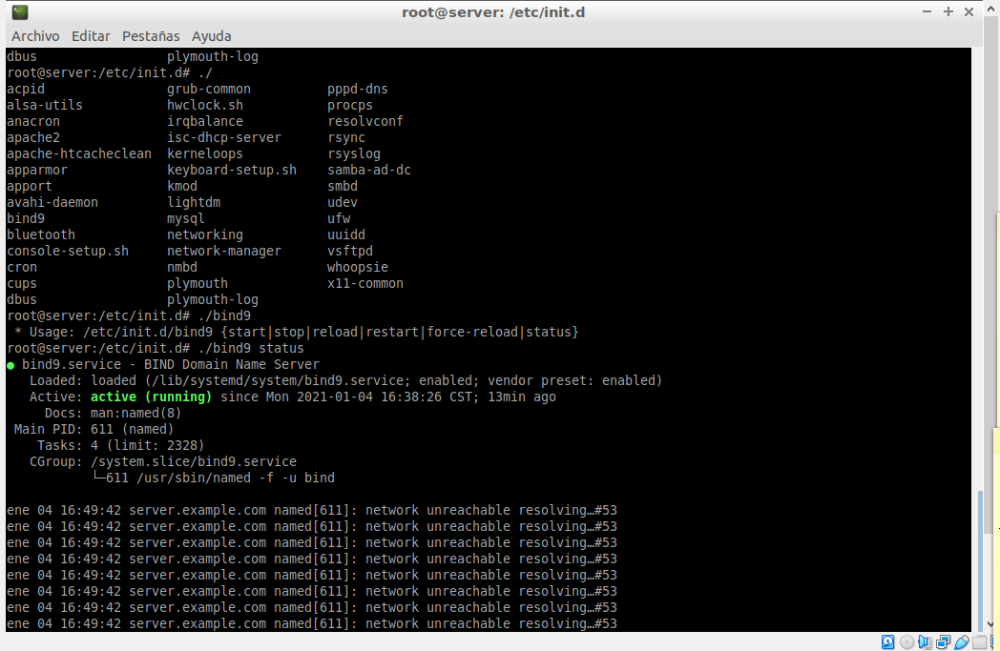 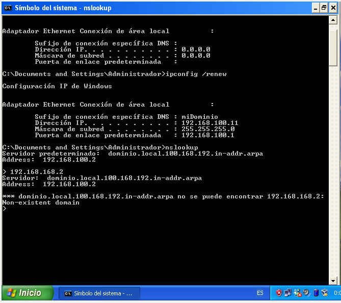 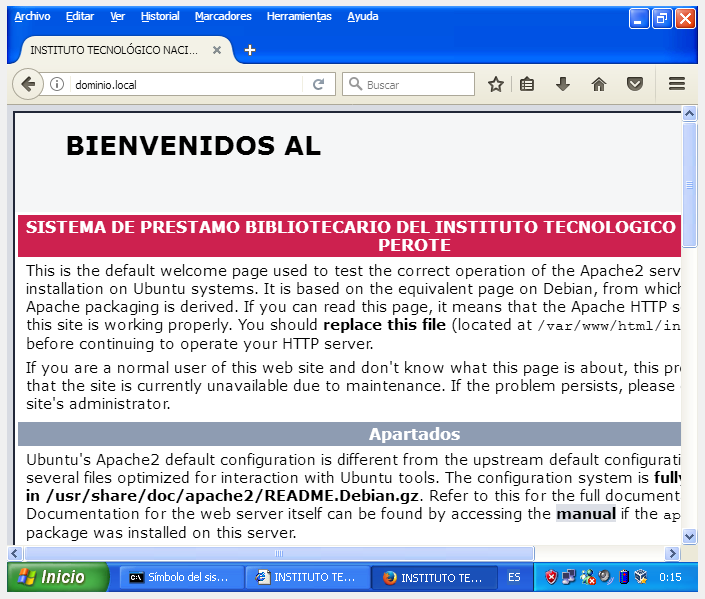El servidor bind9 actualiza constantemente automáticamente las direcciones IP sin esfuerzo, esto con fines de seguridad y autenticidad, ayudando a no comprometer los host dentro de la institución para algún caso de ataque.
Servidor Impresión
El servidor Cups (servidor de impresión) será instalado en ambos servidores pues su importancia esta en los centros de cómputo, los equipos de cómputo como clientes para este servidor, además también es útil si algún equipo de los edificio A que es el de dirección o el edificio I que es donde se encuentra en primer centro de cómputo, puede optarse como una alternativa a fallos en otro servicio de impresión, así se encuentran estos servidores como otra alternativa. O también facilitando el proceso impresión desde algún punto u área de la institución donde se necesiten la impresión de documentos para tramites u otras situaciones que se necesiten con urgencia podrán ser facilitado su proceso.
Cups es un servidor direcciona el elemento a la primera impresora disponible, además de que sus filtros permiten imprimir distintos tipos de archivos sin esfuerzo, los usuarios pueden imprimir localmente o por la red seleccionando la impresora por su nombre, al igual tiene restricciones de acceso a las impresoras para controlar que usuarios pueden imprimir en la impresora y cuáles no, todas estas características benefician por ejemplo a el control de máquinas del área de departamento escolar que pueden hacer uso de las impresoras de esa área de la institución educativa junto con la sala de docentes de posdgrado y la sala de docentes normal.
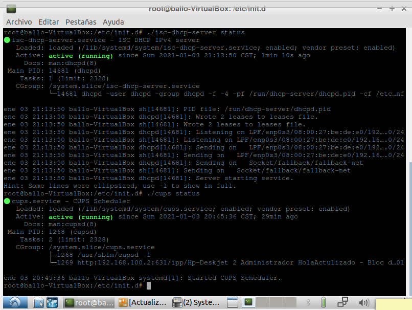 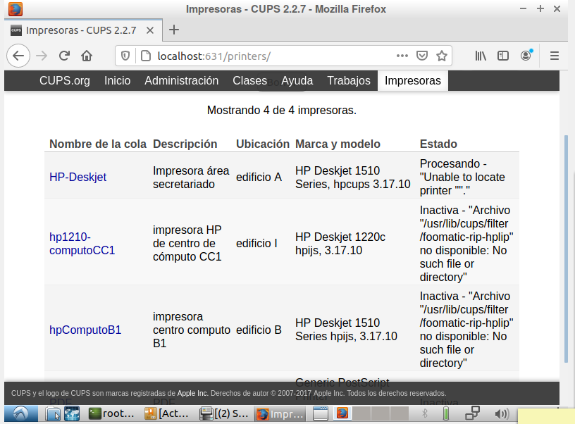 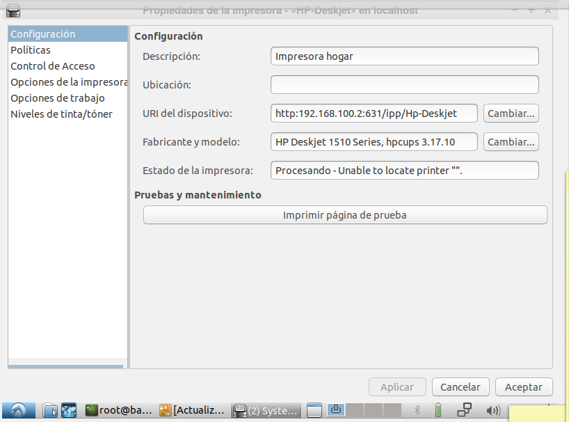Al igual el otro servidor Ubuntu con cups se encargará de hacer una buena restricción de los dispositivos o máquinas pues el edificio A cuenta con el área de dirección, es decir, hay una mayor demanda de impresión por lo cuál es importante que al mandar un archivo en ese edificio a la impresora elgida colocarse en la pila de la primera impresora disponible sea fácil y rápido. Al igual que del centro de cómputo y la biblioteca del edificio I necesitan que los elementos encuentren las impresoras disponibles.
Servidor Samba
El servidor Samba alojado en ambos servidores Ubuntu. En el primer servidor será util por ejemplo para el centro de cómputo 1 y la biblioteca del edificio I, al igual que todos los servicios, direcciones, divisiones y departamentos del edificio A, la sala de docente del posdgrado compartir las impresoras que cubre el área del primer servidor entre cliente windows y unix, así la impresión sea más fácil y sencilla.
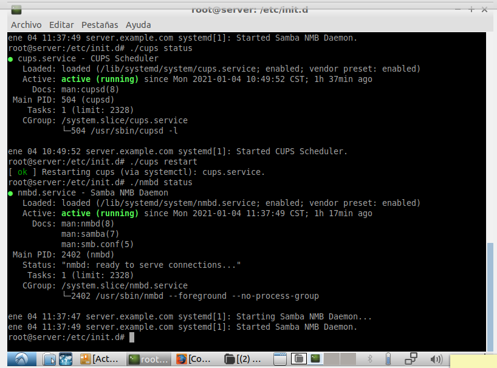En el segundo servidor perfil deseable con la otra de sala de maestros del edificio F, la sala de docentes del edificio D, los centros de cómputo del mismo edificio B, en que ayuda samba, bueno Samba le permite a linux establecer una comunicación con productos Micrisoft, es decir que los dispositivos conectados a la red de la institución con sistemas operativos Microsoft ahora podrán compartir impresoras, compartir sistemas de archivos distribuidos o no.
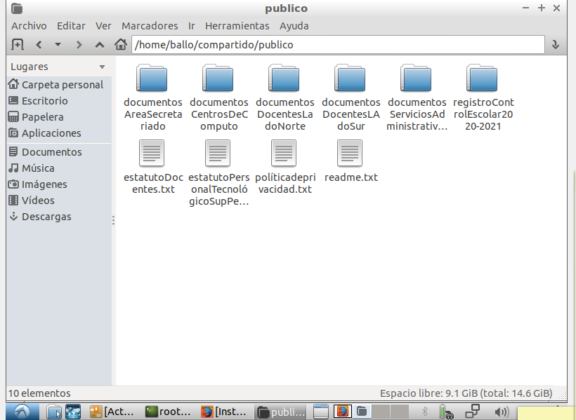En las carpetas públicas se generaron directorios y documentos en los cuáles podrán acceder sin inicio de sesión.
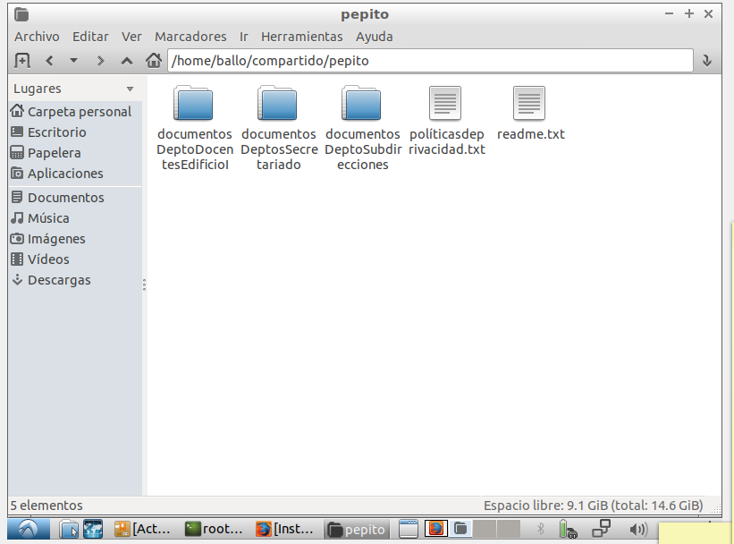Es una carpeta de usuario privado, se configuro para que el usuario local y el usuario pepito pueda acceder a través de su usuario y contraseña configurados previamente.
¡Gracias por llegar al final!